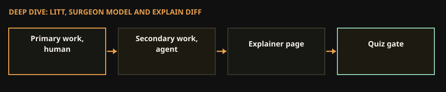

Deep Dive: Litt, Surgeon Model and Explain Diff
The delegation taxonomy from Code like a Surgeon, plus the full explain diff skill structure from his public gist, read in full. Sources: geoffreylitt.com, 24 October 2025, and gist.github.com/geoffreylitt. Confidence: High.

The surgeon model
The name comes from the chief programmer team in old software practice: one surgeon holds the core work, a team takes the rest. Litt maps the split to agents. The human keeps primary work: design, core logic, fast feedback edits. The agent takes secondary work, in four named forms:
- A guide to the code areas a big task will touch, written before the task starts.
- A spike: a rough attempt at a big change, built to review and often to throw away.
- Fixes with a clear spec: type errors, named bugs, bounded repairs.
- Documentation of finished work.
Secondary work runs async, in the background, at times overnight. His example: an agent told to have a research report ready by 7 in the morning. Primary work stays tight loop, with tab complete level feedback. The autonomy slider is the whole model: loose for secondary, tight for primary.
The explain diff skill, full structure
The gist holds two variants, HTML and Notion, with one content spec. Opening line of the skill: Please make me a rich, interactive explanation of the specified code change. Four sections, in fixed order:
Section 1: Background The system around the change. A deep background for a beginner first, skippable. Then a narrow background on the exact area the change touches. Explore wide before writing. Section 2: Intuition The essence before the detail. Concrete examples with toy data. Figures and diagrams in number. Section 3: Code A walk through the change, grouped by idea, in an order a reader can follow. Never in file order. Section 4: Quiz Five questions, medium difficulty, real understanding, no gotchas. HTML form: pick an answer, get right or wrong feedback at once. Notion form: answers in toggle blocks, each with a note on why it is right or wrong.
Format rules from the gist
- One self contained HTML file, CSS and JS inside, one long page, section headers, a table of contents. No tabs for top level structure.
- File lives in a global place outside the repo. Name starts with the date: YYYY-MM-DD-.
- Prose model named in the skill: the clarity and flow of Martin Kleppmann.
- Diagrams: reuse a few diagram families. Simplified UI diagrams and system flow diagrams with example data. No ASCII diagrams. HTML designs in place of text art.
- Code blocks in pre tags. Any custom div that holds code gets white space pre-wrap, with a scan for that rule before save.
- Callouts for key concepts, definitions, and edge cases.
The usage rule
From his later talk, via a secondary account: read the explainer before the raw diff, and pass the five question quiz before the code ships. The quiz is the gate. A reviewer who fails the quiz has not reviewed, no matter how long the diff stayed open.
Apply this to your work
This skill fits your review load at once. Your agent lanes ship diffs and pages faster than you can read them, and your standing rule is that a worker claim never counts without a check. Run explain diff on each lane output: one explainer page per change set, five questions, and your pass is the ship gate. The form also matches your study law: background, intuition, code, quiz is your Russian doll order in one page, and the quiz gives you the retrieval practice your learning system demands.
Replication checklist
- Copy the skill structure into a command in your main coding tool this week.
- Run it on the next agent diff you must review. Take the quiz before you open the raw diff.
- Rule: quiz fail means the change waits, and the explainer gets a fix first.
Prompt file: prompts/explain-diff.md, a full template built on the gist structure.
Visual map of this page
Two views of one page: a Mermaid flow for work order, rendered by the local Mermaid library in this folder, and a markmap for concept groups.
Mermaid source, for offline read
flowchart LR A[Change lands] --> B[Explain diff page] B --> C[Background, intuition, code] C --> D[Five question quiz] D -->|pass| E[Ship] D -->|fail| F[Fix explainer, retest] F --> D
How to read the flow diagram. Step 1: start at the first box. Step 2: follow each arrow to the next stage. Step 3: at a branch box, read both paths before a choice. Step 4: a loop arrow means work returns for one more pass vs a test.
Markmap: concepts on this page
- Deep Dive: Litt, Surgeon Model and Explain Diff
- Surgeon split
- Guide and spike
- Spec fixes
- Docs
- Explainer
- Background
- Intuition
- Code
- Quiz
- Gate
- Read before diff
- Pass before ship
- Surgeon split